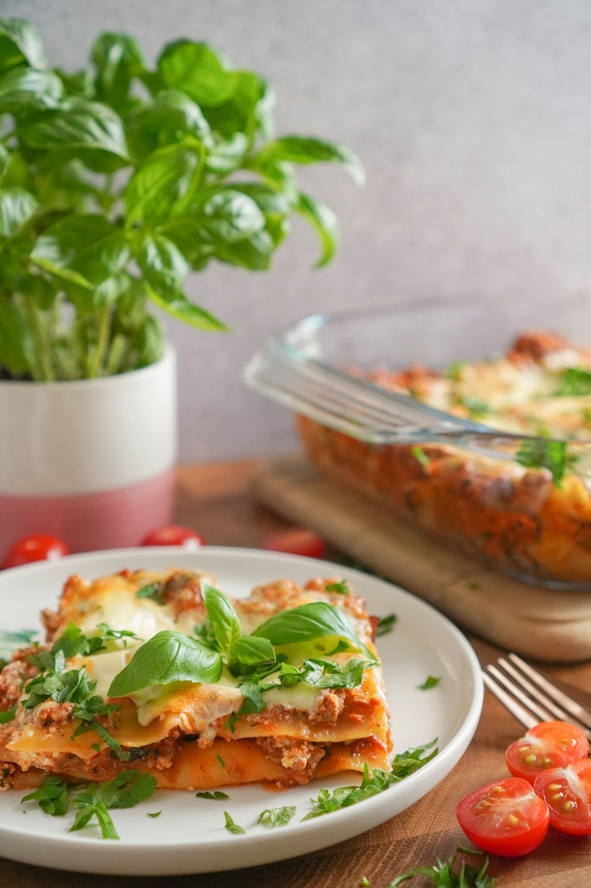

Lasagna

Description
Lasagna is a classic Italian baked dish made of wide, flat sheets of pasta layered with savory sauces, cheeses, and fillings.
Ingredients
- For the Spiced Veggie-Tomato Sauce:
- Lasagna Sheets: 9-12 oven-ready or pre-boiled sheets
- Aromatics: 1 large onion (finely chopped), 1 tbsp ginger-garlic paste, 2 green chillies (finely chopped)
- Vegetables: 1.5 cups mixed chopped veggies (bell peppers, sweet corn, carrots, peas, mushrooms)
- Tomato Base: 2 cups tomato puree or crushed canned tomatoes
- Spices: 1 tsp red chilli powder, 1 tsp coriander powder, ½ tsp garam masala, ½ tsp oregano, ½ tsp chilli flakes, salt to taste
- Oil/Butter: 2 tbsp cooking oil or butter
- For the Paneer-Bechamel Layer
- Paneer: 1 cup crumbled or finely diced paneer
- White Sauce (Bechamel): 2 tbsp butter, 2 tbsp all-purpose flour (maida), 1.5 cups milk, ¼ tsp black pepper, pinch of nutmeg (optional), salt to taste
- Cheese: 2 cups shredded Mozzarella or Processed Cheese
Steps
- Prepare the Spiced Veggie Sauce:
- Heat oil in a pan over medium heat. Add onions, green chillies, and ginger-garlic paste. Saute until fragrant and golden brown.
- Add chopped mixed vegetables and sauté for 3-4 minutes until slightly tender yet crisp.
- Pour in tomato puree. Stir in red chilli powder, coriander powder, garam masala, oregano, and salt.
- Simmer for 8-10 minutes until the sauce thickens and oil separates slightly. Stir in crumbled paneer at the very end and set aside.
- Make the Creamy White Sauce:
- In a separate saucepan, melt 2 tbsp butter over low heat. Add 2 tbsp flour and whisk continuously for 1-2 minutes until cooked without browning.
- Slowly pour in cold milk while whisking constantly to prevent lumps.
- Cook on medium-low heat until the sauce coats the back of a spoon. Season with salt, black pepper, and a pinch of nutmeg.
- Assemble the Layers:
- Grease a 9x13 inch baking dish (or a pan large enough for a deep-dish cook top).
- Spread a thin layer of white sauce on the bottom of the dish to keep sheets from sticking.
- Place a layer of lasagna sheets side by side (overlap slightly if needed).
- Spread half of the spiced veggie-paneer sauce, followed by a layer of white sauce and a generous sprinkle of mozzarella.
- Repeat layers: Pasta sheets → Spiced Veggie Sauce → White Sauce → Cheese.
- Finish with a top layer of lasagna sheets, covered fully with white sauce and the remaining cheese. Sprinkle oregano and chilli flakes on top.
- Bake or Cook on Stovetop:
- Oven Method: Cover with foil and bake at 190°C (375°F) for 25 minutes. Remove foil and bake uncovered for another 10-15 minutes until the top is bubbly and golden brown.
- Kadai / Stovetop Method: Place a trivet inside a large preheated kadai (covered with a lid on high heat for 10 mins). Place the assembled dish inside, cover, and cook on medium-low heat for 35-40 minutes until the pasta is cooked through and cheese melts.
Home